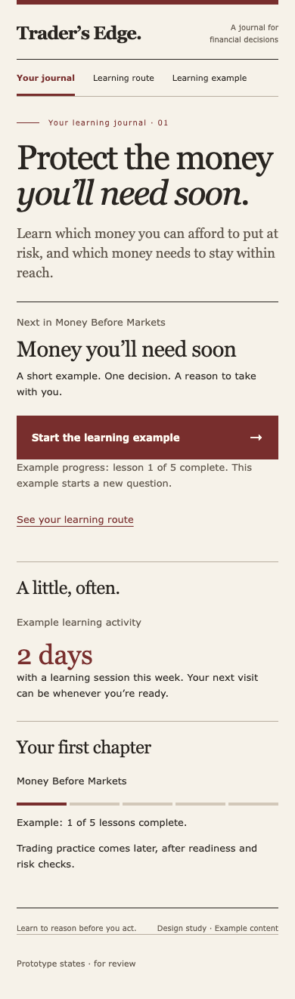
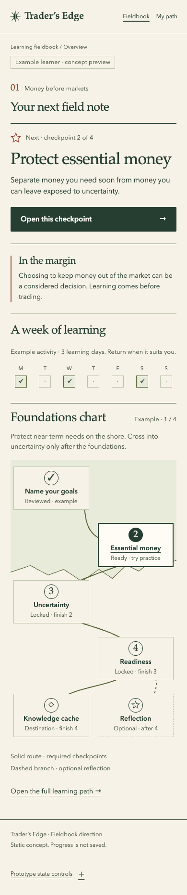
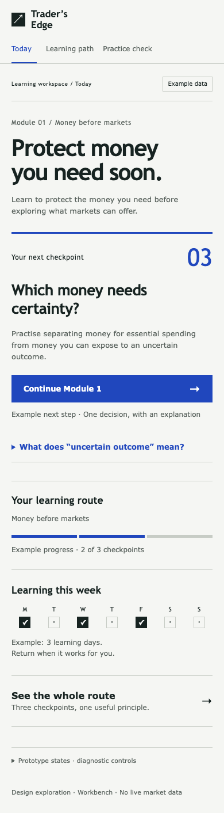

01 / Editorial
Ivory, oxblood and a printed journal. Direct lesson start; the longest reading route.

Trader’s Edge / visual direction gate / 4 October 2026
Working static concepts: dashboard, learning map and quiz. All progress is example data. Choose a direction before the product’s design system is specified.
Ivory, oxblood and a printed journal. Direct lesson start; the longest reading route.

Paper, forest ink and a foundations shore. Recommended for its early next action and map.

Porcelain, cobalt and square controls. Plain, practical wording; one more step to practice.
